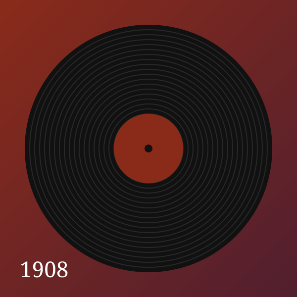

Shoqnia e hengxhive e shahirave, «Kanga e Oso Kukës» (Gramophone 10771; matrix 4570r; Shkodër, 1908)

Background: A 2023 Albanian-language cultural article published by the Albanian Ministry of Defence describes a song about Oso Kuka, attributing its composition to Zenel Maha and dating its creation to the time of the 1862 Vranina battle. It says the song comprised 22 stanzas and was first performed by a Shkodër aheng ensemble in a local coffeehouse. The account presents Oso Kuka's stand against Montenegrin forces as a narrative of resistance and refusal to surrender. A scholarly study of Gjergj Fishta's Lahuta e Malcis independently situates the five-canto Oso Kuka cycle in 1862 and identifies it as a central episode of the Albanian national epic.